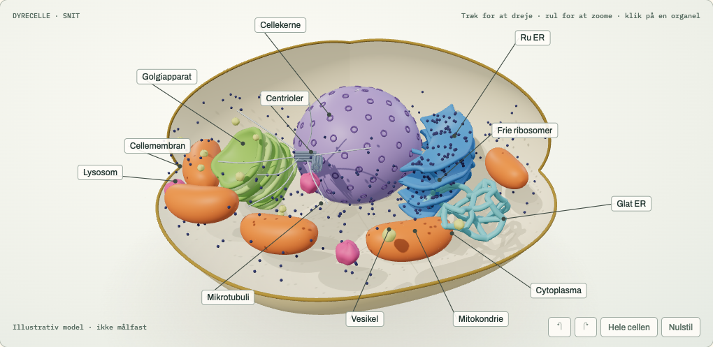

Bygger cellen …
DYRECELLE · SNITTræk for at dreje · rul for at zoome · klik på en organel
Illustrativ model · ikke målfast

3D kunne ikke starte i denne browser. Her ses et billede af modellen.
Biologi · celler Alfa
Bygger cellen …

3D kunne ikke starte i denne browser. Her ses et billede af modellen.
Cellen er vist som et solidt legeme, hvor en kile er skåret væk, så organellerne ses i cytoplasmaet. Snitfladerne er en illustrativ hjælp; en rigtig celle har ingen flade overflader indeni. Størrelser, antal og farver er valgt for at gøre delene tydelige og er ikke målfaste – organellerne er langt mindre i forhold til cellen, og ribosomerne er mange tusinde.
Membranerne er tegnet som sammenhængende flader: mitokondriernes indre membran folder sig ind som cristae, golgiapparatets sække er lukkede cisterner, og kernehylsteret er to membraner med porer. At »åbne« en organel betyder her, at et stykke af membranen løftes af for at se ind; det er en visningsfunktion, ikke en biologisk proces. Three.js 0.169.0 (MIT) bruges lokalt til 3D.